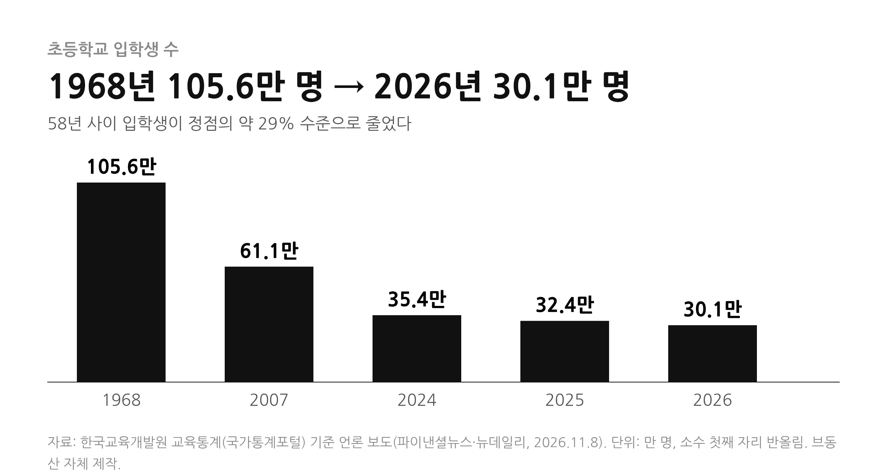
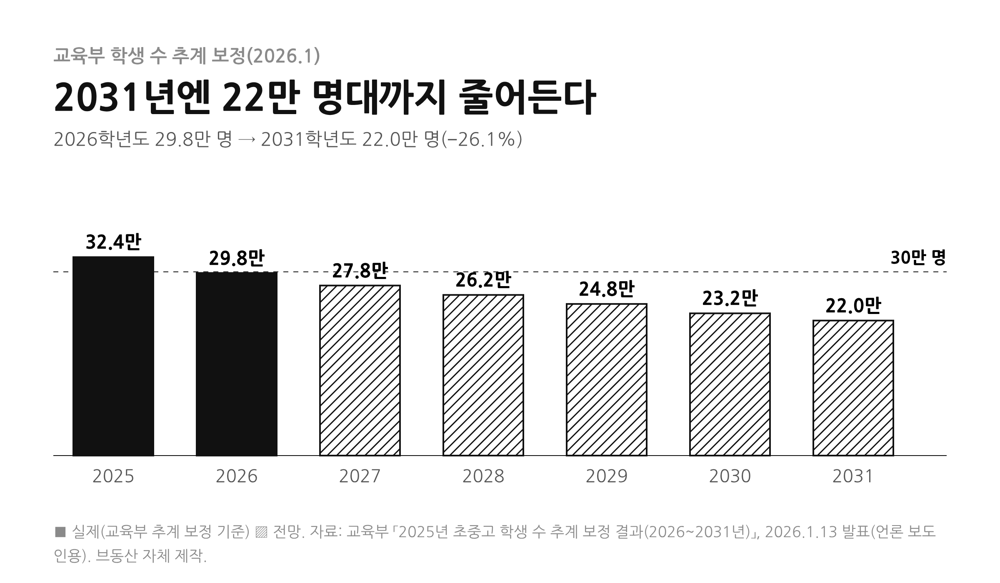
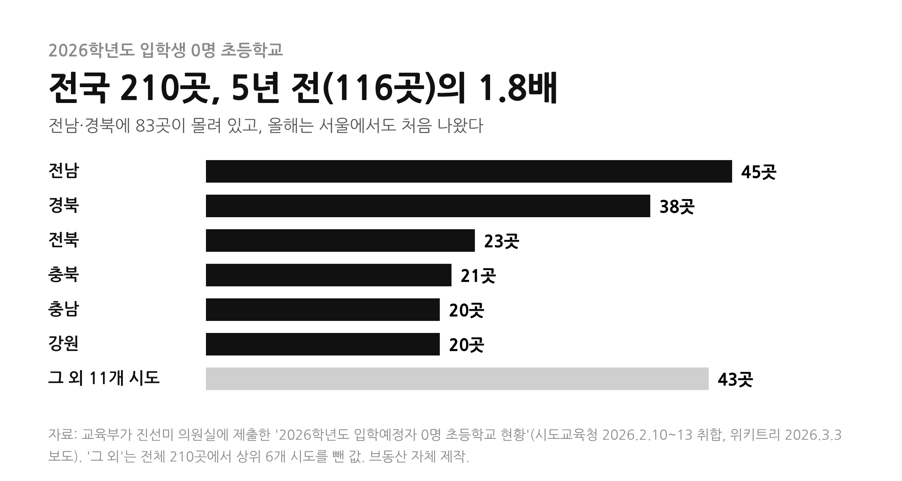

올해 초등학교에 입학한 아이가 30만 명 안팎이라고 한다. 통계를 낸 이래 처음 보는 숫자라는데, 이 숫자가 우리 집값과는 어떤 관계가 있을까?
1. 30만 명 선이 무너졌다는 말의 정확한 뜻
교육부가 2026년 1월 발표한 「2025년 초중고 학생 수 추계 보정 결과」에 따르면 2026학년도 전국 초등학교 1학년은 29만 8,178명이다. 전년(32만 4,040명)보다 8.0% 줄어 처음으로 30만 명 아래로 내려갔다.
한편 11월 보도된 교육통계 집계로는 올해 입학생이 30만 1,442명이다. 추계와 실제 집계가 3,000명 남짓 달라 30만 선의 위아래로 갈렸지만, 어느 쪽이든 1964년 통계 작성 이래 가장 적다는 점은 같다.

2. 앞으로는 더 줄어든다
교육부 추계로는 초등 입학생이 2027년 27만 7,674명, 2028년 26만 2,309명, 2029년 24만 7,591명, 2030년 23만 2,268명, 2031년 22만 481명으로 이어진다. 2026년 대비 2031년은 26.1% 적다.
2027학년도 입학 대상인 2020년생 출생아는 27만 2,337명이다. 2019년생(30만 2,676명)보다 10.0% 적다. 초·중·고 전체 학생 수도 2025년 501만 5,310명에서 2026년 483만 6,890명으로 줄어 500만 명 선이 깨졌다.

3. 학교 현장에서는 이미 일어나는 일
교육부가 진선미 의원실에 제출한 자료로는 2026학년도 입학생이 한 명도 없는 초등학교가 전국 210곳이다. 5년 전 116곳보다 약 81% 많다. 전남(45곳)과 경북(38곳)에 가장 많고, 전북 23곳, 충북 21곳, 충남·강원 각 20곳이 뒤를 잇는다.
서울에서도 올해 처음으로, 개축이나 통폐합 같은 특수 사정이 없는 정상 운영 학교에서 입학생 0명이 나왔다. 서울은 2021년 이후 매년 4~5곳이 신입생을 받지 않았지만 모두 개축·통폐합 예정 같은 사정이 있었다. 최근 5년(2021~2025년) 통폐합으로 문을 닫은 학교는 153곳이고 그중 초등학교가 120곳이다.

4. 서울도 예외가 아니다
교육부 추계로 서울의 초등 1학년은 2026년 4만 2,799명에서 2031년 2만 9,868명으로 5년 새 30.2% 줄어든다. 전국 평균 감소율(26.1%)보다 가파르다. 학령인구 감소가 지방만의 이야기가 아니라는 뜻이다.
5. 그래서 내 집값은?
먼저 분명히 해 둘 점이 있다. 초등 입학생 감소가 아파트 가격을 낮춘다고 입증한 연구나 공식 통계는 이번 조사에서 확인하지 못했다. 입학생이 줄었다는 사실과 집값이 어떻게 된다는 전망 사이에는 아직 확인된 연결고리가 없다.
시장 전문가들의 시각도 엇갈린다. 학령인구가 줄어도 학군지 수요는 꾸준하다는 분석(우리은행 부동산리서치랩장, 2024년 11월)이 있고, 반대로 학령인구가 줄어드는 가운데 주택시장 전반에 미치는 영향은 크지 않을 것이라는 의견도 소개돼 왔다. 다만 학군지 가격 상승이 강남 집값 흐름과 맞물렸을 수 있어 지속 여부는 더 지켜봐야 한다는 단서가 붙는다.
학생 수가 줄면 학급 수와 통학구역, 학교 배치가 달라질 수 있다. 이런 변화는 동네마다 다르게 나타난다. 그래서 전국 평균보다 우리 동네 배정초의 학생 수 흐름을 직접 보는 편이 더 쓸모 있다. 집값은 일자리, 교통, 공급 물량, 금리와 함께 움직이는 만큼 학생 수는 여러 변수 중 하나로 보면 된다.
참고한 자료
뉴데일리 · 초등 입학생 사상 처음 30만 명 미달(2026.11.8) ↗ · 파이낸셜뉴스 · 내년 초등학교 입학생 30만명선 붕괴(2026.11.8) ↗ · 트윅24 · 올해 초1 30만명도 깨졌다(교육부 추계 보정 결과, 2026.1.13) ↗ · 위키트리 · 입학생 0명 초등학교 전국 210곳(2026.3.3) ↗ · 한국교육신문 · 입학생 줄고 폐교 늘고(2026.2.20) ↗ · 뉴데일리 · 학군지 주택침체에도 집값방어(2024.11.21) ↗ · 뉴데일리 · 대입제도 대수술…대치쏠림 심화 등 자산시장 큰변동 예고(2023.10.11) ↗